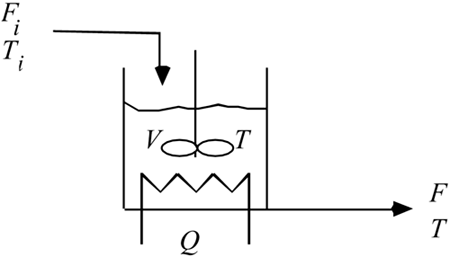

| [ Team LiB ] |
|
2.5 Material and Energy BalancesSection 2.3 covered models which consist of material balances only. These are useful if thermal effects are not important, where system properties, reaction rates, etc. do not depend on temperature, or if the system is truly isothermal (constant temperature). Many chemical processes have important thermal effects, so it is necessary to develop material and energy balance models. One key is that a basis must always be selected when evaluating an intensive property such as enthalpy. Review of ThermodynamicsDeveloping correct energy balance equations is not trivial and the chemical engineering literature contains many incorrect derivations. Chapter 5 of the book by Denn (1986) points out numerous examples where incorrect energy balances were used to develop process models. The total energy (TE) of a system consists of internal (U), kinetic (KE), and potential energy (PE), where the kinetic and potential energy terms are For most chemical processes where there are thermal effects, the kinetic and potential energy terms can be neglected, because their contribution is generally at least an order of magnitude less than that of the internal energy term. When dealing with flowing systems, we usually work with enthalpy. Total enthalpy is defined as The heat capacity is defined as the partial derivative of enthalpy with respect to temperature, at constant pressure. The heat capacity, on a unit mass basis, is where the overbar indicates that the enthalpy is on a unit mass basis. We make use of this relationship in the following example. The goal of the following example is severalfold:
Example 2.3: Heated Mixing TankConsider a perfectly mixed stirred-tank heater, with a single feed stream and a single product stream, as shown below. Assuming that the flow rate and temperature of the inlet stream can vary, that the tank is perfectly insulated, and that the rate of heat added per unit time (Q) can vary, develop a model (Figure 2-7) to find the tank liquid temperature as a function of time. Figure 2-7. Stirred-tank heater. Material Balance
Neglecting changes in density due to temperature, we find Energy BalanceHere we neglect the kinetic and potential energy contributions, We write the total work done on the system as a combination of the shaft work (WS) and the energy added to the system to get the fluid into the tank and the energy that the system performs on the surroundings to force the fluid out. This allows us to write Equation (2.49) as and since H = U + pV, and , we can rewrite Equation (2.51) as Neglecting pressure*volume changes, we find We must remember the assumptions that went into the development of Equation (2.52).
The total enthalpy term is and assuming no phase change, we select an arbitrary reference temperature (Tref) for enthalpy Often we assume that the heat capacity is constant, or calculated at an average temperature, so
We now write the energy balance (2.52) in the following fashion, Expanding the derivative term and assuming that the density is constant, we have or from Equation (2.48) Canceling common terms gives but Tref is a constant, so d(T - Tref)/dt = dT/dt. Also, neglecting WS (which is significant only for very viscous fluids), we can write which yields the two modeling equations In order to solve this problem, we must specify the parameters r and cp, the inputs Fi, F, Q, and Ti (as a function of time), and the initial conditions V(0) and T(0). Steady-State Behavior and the Effect of Scale (Size)The steady-state solution can be found by setting the derivative terms in Equations (2.57) and (2.58) to 0. The resulting relationship between the manipulated power and the outlet temperature is where the subscript s is used to indicate a steady-state value. Notice that for a given steady-state flow rate, the relationship between heater power and outlet temperature is linear. Also, the volume of the vessel has no effect on the steady-state temperature (volume has a solely dynamic effect). Here we consider a stream of water entering a stirred-tank heater at 20°C, at three possible flow rates: 1 liter/minute (espresso machine), 10 liters/minute (household shower), and 100 liters/minute (small car wash). The outlet temperature as a function of heater power [Equation (2.59)] is plotted in Figure 2-8 for each of the three cases. As expected from Equation (2.59), the curves are linear. The lower flow rate operation has a high sensitivity (slope) of temperature to power, while the higher flow rate operation has a low sensitivity. This makes physical sense, because a given change in power will have a much larger affect on a low flow rate than a high flow rate stream. Figure 2-8. Outlet temperature as a function of heater power. The slope is the sensitivity (also known as the "gain") of the output with respect to the input.This sensitivity is also known as the process gain and is defined as the partial derivative of the output with respect to the input, evaluated at steady state. It is clear from Equation (2.60) that larger flow rates will have smaller gains (slopes or sensitivities). It is often useful to work with scaled variables. For example, if a scaled steady-state input is defined as then all three input flow rates have the same steady-state sensitivity of the output to the scaled input. This is shown in Figure 2-9 and the following equation: Figure 2-9. Outlet temperature as a function of scaled heater power.The discussion thus far has centered on the steady-state behavior of stirred-tank heaters, and we found that the volume had no effect. The volume has a major impact, however, on the dynamic behavior of a stirred-tank heater. Dynamic BehaviorVolume has a considerable effect on the dynamic behavior of this process. The response of the temperature to a step change in the scaled heat input is shown in Figure 2-10, as a function of the residence time (V/F). As expected, longer residence times have a slower response time than shorter residence-time systems. These curves were obtained by integrating Equation (2.58) for the three different residence times (with V assumed constant). The initial steady-state values are T = Ti = 20°C and Qscaled = 0. At t = 0, Qscaled is stepped from 0° to 1°C. Figure 2-10. Response of temperature to step change in scaled heat addition rate. |
| [ Team LiB ] |
|